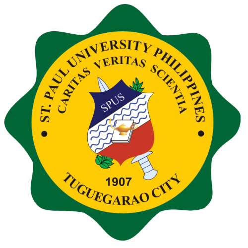

--
School of Nursing and Health Sciences |
|---|
|
• Diploma in Midwifery |
School of Business Accountancy and Hospitality Management |
|---|
|
• Diploma in Office Administration |
School of Arts Sciences and Teacher Education |
|---|
|
• Diploma in Global Teacher Education |
School of Information Technology and Engineering |
|---|
|
• Certificate in Cyber Security |
Human Resource Office |
• Certificate in Designing the Future after Retirement |
|---|
--
Mabini Street, Tuguegarao City
Cagayan, 3500 Philippines
Contact Persons:
Corazon M. Dela Cruz
Contact No.: 09751457108
email: coydelacruz@spup.edu.ph
Fe S. Masigan
Contact No.: 09275203384
email: fmasigan@spup.edu.ph